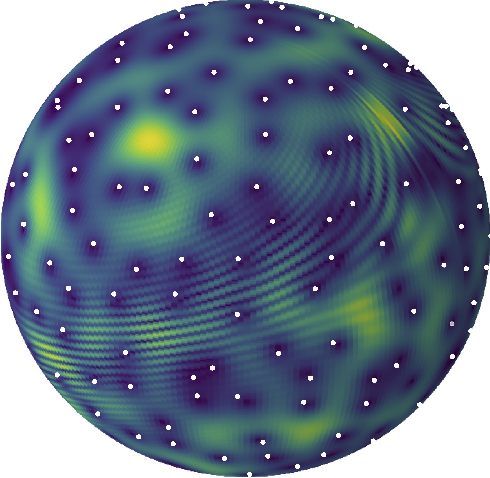

Disclaimer: This is my personal website.
The content of this website reflects my personal views and not those of my current or former employers.
Here I share my research publications, some teaching resources, and a few thoughts on (applied) mathematics more broadly.
About me:
I'm quantitative research director at Qube Research and Technologies, an algorithmic trading investment fund, in Zürich.
I am on leave from my academic position (Maître de conférences, i.e., Associate professor)
from the department of Mathematics at Université de Lille.
My academic research interests lie principally in understanding large random interacting particle systems, including random matrix models, determinantal point processes,
or Gibbs measures such as the Coulomb gas. More recently, I became interested in using such models for applications (numerical integration, machine learning & AI, signal processing,
telecommunications, and quantitative finance).

Peer-reviewed publications:
See also: Google Scholar | MathSciNet | ArXiv.Selected publications: NeurIPS 2025 (spotlight) | JFA 2020 | CPAM 2020 | AoAP 2019 | AoP 2016
Non-asymptotic analysis of data augmentation for precision matrix estimation
with
Lucas Morisset, Alain Durmus.
To appear in NeurIPS - spotlight (2025)
[arXiv]
From point processes to quantum optics and back
with
Rémi Bardenet,
Alexandre Feller,
Jérémie Bouttier,
Pascal Degiovanni,
Adam Rançon,
Benjamin Roussel,
Grégory Schehr,
Christophe I. Westbrook.
Preprint (2022)
[arXiv]
CLT for circular beta-Ensembles at high temperature
with
Gaultier Lambert.
Journal of Functional Analysis (2020)
[arXiv
, JFA]
Mutual information of wireless channels and block-Jacobi ergodic operators
with Walid Hachem,
Shlomo Shamai.
IEEE Transactions on Information Theory (2019)
[arXiv,
IEEE IT]
DLR equations and rigidity for the Sine-beta process
with
David Dereudre,
Thomas Leblé,
Mylène Maïda.
Communications on Pure and Applied Mathematics (2020)
[arXiv
, CPAM]
A correspondence between zeros of time-frequency transforms and Gaussian analytic functions
with
Rémi Bardenet,
Pierre Chainais,
Julien Flamant.
13th International conference on sampling
theory and applications, SampTA (2019) [HAL,
SampTA]
Time-frequency transforms of white noises and Gaussian analytic functions
with
Rémi Bardenet.
Applied and Computational Harmonic Analysis (2019)
[arXiv,
ACHA]
Energy of the Coulomb gas on the sphere at low temperature
with
Carlos Beltrán.
Archive for Rational Mechanics and Analysis (2018)
[arXiv,
ARMA,
TEAMCO video]
Polynomial ensembles and recurrence coefficients
Constructive Approximation (2018)
[arXiv,
CA]
Concentration for Coulomb gases and Coulomb transport inequalities
with
Djalil Chafaï,
Mylène Maïda.
Journal of Functional Analysis (2018)
[arXiv,
JFA]
Processus ponctuels déterminantaux / Determinantal Point Processes
with
Mylène Maïda.
Gazette des Mathématiciens and Newsletter of the EMS(2018)
[SMF, EMS]
From random matrices to Monte Carlo integration via Gaussian quadrature
with Rémi Bardenet.
IEEE Statistical Signal processing workshop (2018) [HAL, IEEE SSP]
Monte Carlo with determinantal point processes
with
Rémi Bardenet.
Annals of Applied Probability (2019)
[arXiv, AAP]
A survey on the eigenvalues local behavior of large complex correlated Wishart matrices
with
Walid Hachem, Jamal Najim.
ESAIM: Proceedings and surveys (2015)
[arXiv,
ESAIM]
Large complex correlated Wishart matrices: The Pearcey kernel and expansion at the hard edge
with
Walid Hachem, Jamal Najim.
Electronic Journal of Probability (2016)
[arXiv,
EJP]
Large complex correlated Wishart matrices: Fluctuations and asymptotic independence at the edges
with
Walid Hachem, Jamal Najim.
Annals of Probability (2016)
[arXiv,
AOP]
Average characteristic polynomials of determinantal point processes
Annales de l'Institut Henri Poincaré - Probabilités et Statistiques (2015)
[arXiv,
AIHP]
Large deviations for a non-centered Wishart matrix
with Arno
Kuijlaars.
Random Matrices: Theory and Applications (2013)
[arXiv,
RMTA]
A note on large deviations for 2D Coulomb gas with weakly confining potential
Electronic Communications in Probability (2012)
[arXiv,
ECP]
Weakly admissible vector equilibrium problems
with Arno
Kuijlaars.
Journal of Approximation Theory (2012)
[arXiv,
JAT]
PhD students:
Lucas Morisset (2024- ), with Alain Durmus and Emmanuel Gobet at Ecole Polytechnique & QRT.
Mohamed Slim Kammoun (2017-2020), with Mylène Maïda at Université de Lille.
Projects:
I was a member of the INRIA team PARADYSE, and the ERC funded project BlackJack led by Rémi Bardenet.Some academic lectures I gave (possibly in French):
(2025-) Machine learning for quantitative trading
Univ. Zürich, Portfolio Management Program
(2019-2020) Concentration de la mesure et applications
Univ. Lille, M2 Recherche (Math), Cours + TD.
(2019-2020) Chaînes de Markov et applications
Univ. Lille, M2 Ingénierie Statistique et Numérique (Math),
Cours +
TP Python.
(2019-2020) Probabilités discrètes
Univ. Lille, L2 (Math), TD.
(2018-2020) Probabilité, modèles et applications
Univ. Lille, M1 Ingénierie mathématique (Math),
Cours +
TD.
(2016-2020) Séries temporelles
Univ. Lille, M1 Mathématiques pour la finance (Math),
Cours +
TP Python +
TP R (older).
(2016-2018) Introduction to statistics
Centrale Lille, M1 Biomedical engineering, cours + TP R.
(2016-2018) Introduction aux processus ponctuels déterminantaux
Univ. Lille, M2 Recherche (Math), Cours + TD.
(2015-2018) Traitement informatique de la statistique des données
Univ. Lille, M1 Ingénierie mathématique (Math), cours +
TP R & SAS.
(2015-2017) Mathématiques de base
Univ. Lille, L1 SVTE parcours aménagé (Biologie), cours + TD.
(2015-2016) Mathématiques (analyse, algèbre, probabilités)
Telecom Lille, TD.
Since September 2020, I am on leave (en disponibilité) to work as a Quantitative Researcher at QRT (Paris). I moved in October 2023 to the brand new QRT office in Zürich, as Quantitative Research Director.
Since September 2015, I am Maître de conférences (~Associate professor) in the Laboratoire Paul Painlevé, the mathematics department of the University of Lille. I obtained in 2020 my "Habilitation à diriger des recherches" (HDR), which is the French diploma allowing one to supervise PhD students and apply for full professorship; the manuscript can be found here.
During 2013-2015, I had a postdoctoral position at the Royal Institute of Technology (KTH) in the research team of Kurt Johansson.
In June 2013, I obtained a joint PhD degree (see the thesis) from KU Leuven, supervised by Arno Kuijlaars, and the Institut de Mathématiques de Toulouse, supervised by Michel Ledoux.
Before that, I studied in the Magistère de mathématiques de Strasbourg, including a Bachelor thesis with Janos Polonyi on quantum physics' axioms, a Magistère thesis with Jean-Bernard Zuber on quantum integrable systems (internship at the Laboratoire de Physique Théorique et Hautes Energies de Jussieu), and a Master thesis with Pierre van Moerbeke on random matrices and tilings (Erasmus exchange program with the Université Catholique de Louvain).
Recommended science resources:
Libres pensées d'un mathématicien ordinaire (Djalil Chafaï's math blog)
What's new (Terence Tao's math blog)
Quanta Magazine (general science blog from the Simons Foundation)
Science étonnante (general science Youtube channel by David Louapre)
Recommended economics and finance resources:
Freakonometrics (Arthur Charpentier's blog on actuarial science, statistics, and more)
Heu?reka (economy & finance Youtube channel by Gilles Mitteau)
Money stuff (Matt Levine's newsletter at Bloomberg Opinion)
A mathematician's survival kit:
ArXiv (open-access repository of e-prints mainly funded by the Simons Foundation)
Math Overflow (research-level math questions)
Math Stack Exchange (student-level math questions)
Stack Overflow (programming questions)
Digital Library of Mathematical Functions (when looking for a special function)
The On-Line Encyclopedia of Integer Sequences (when looking for a special sequence)
And of course, ChatGPT, Claude, their cousins...
together with Cursor, which probably made this website slightly less amateurish, among many other things.